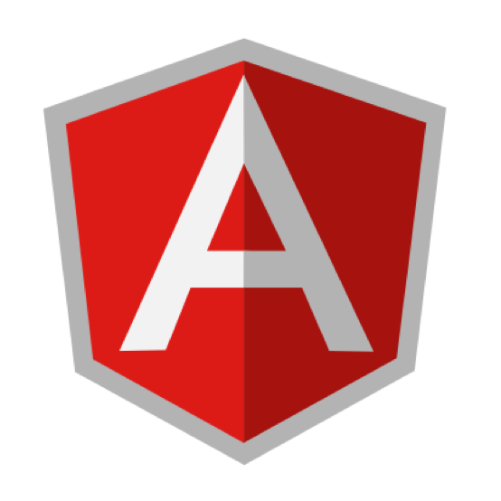
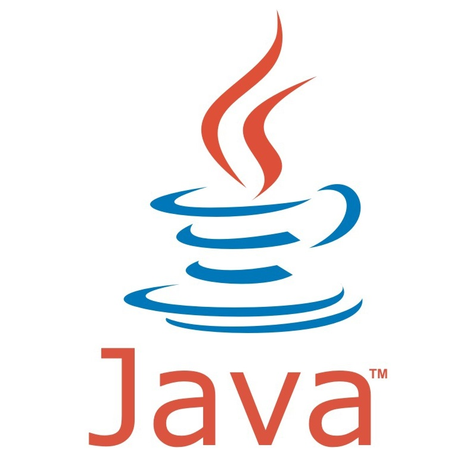

Ram Prasad Reddy

About Me:
I'm a software engineer based out of Hyderabad.
I'm extremely passionate about web development and design.
I always strive for improvement.
I'm graduated in Electrical and Electronics Engineering in 2015.
Hobbies:
I'm very passionate about cricket and I regularly participate in corporate cricket tournaments.
I also enjoy photography and writing stories.
I'm extremely passionate about web development and design.
I always strive for improvement.
I'm graduated in Electrical and Electronics Engineering in 2015.
Hobbies:
I'm very passionate about cricket and I regularly participate in corporate cricket tournaments.
I also enjoy photography and writing stories.
Technologies
JAVASCRIPT
PYTHON

ANGULAR

JAVA
NODE JS
MONGO DB
Professional Experience
ASSOCIATE PROFESSIONAL:
2+ years of experience in providing the end to end application support for the asset management tool and monitor the performance and availability of large distributed network and applications utilizing monitoring tools such as IBM Tivoli Monitoring and Nagios for critical client of the organization and successful in minimizing the outage and troubleshooting the application and monitoring issues.
DXC.TECHNOLOGY(FORMERLY KNOWN AS COMPUTER SCIENCES CORPORATION)
FROM: 8TH JANUARY 2016-TILL DATE
Project Responsibilities:
2+ years of experience in providing the end to end application support for the asset management tool and monitor the performance and availability of large distributed network and applications utilizing monitoring tools such as IBM Tivoli Monitoring and Nagios for critical client of the organization and successful in minimizing the outage and troubleshooting the application and monitoring issues.
DXC.TECHNOLOGY(FORMERLY KNOWN AS COMPUTER SCIENCES CORPORATION)
FROM: 8TH JANUARY 2016-TILL DATE
Project Responsibilities:
NAGIOS:
- Installation and configuration of NAGIOS.
- Addition of new devices or services to monitoring.
- Addition of new devices or services to monitoring.
- Creating or editing configuration files.
- Monitor and acknowledge alerts generated by the physical/environmental, network, software, and server management systems.
- Troubleshoot the issues/alerts generated on NAGIOS console and escalate the issues to respective teams for physical or network issues.
IBM Tivoli Monitoring:
- Installation and upgradation of the Tivoli Enterprise Monitoring Agents to latest versions across multiple platforms.
- Troubleshooting and configuring Tivoli Enterprise Monitoring Agent.
- Addition or removal of servers from monitoring environment as per the level of monitoring required.
- Creating the situations or changing the thresholds in situations for Windows, Linux and Unix systems.
- Configuring historic data collection and remediating the issues.
- Good understanding of Remote and HUB Tivoli Enterprise Monitoring Server, Tivoli Enterprise Portal, Tivoli Enterprise Portal Servers, Tivoli Data Warehouse.
- Customizing workspaces on Tivoli Enterprise Portal.
- Work with multiple teams for any server or network issues to minimize the downtime.
APPLICATION SUPPORT:
- Served as sole administrator for IBM Maximo tool for Zurich client which includes complete end to end support. (Application, Database and Administration)
- Good knowledge on Application Designer and Database Configurations.
- Customizing Maximo using MBOs (Maximo Business Objects)
- Monitor Cron jobs and verify the reports being uploaded on time.
- WebSphere administration and Tivoli Common Reporting.
- Troubleshooted and resolved web application issues escalated from Asset Management Team and other departments with a 100% success rate.
- Create assembly lines using Tivoli Data Integrator for bulk uploads.